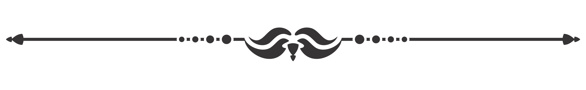

Самый длинный футбольный матч сыграли 1-3 августа 1981 года две ирландские команды футбольного клуба «Каллинаферси» в Керри. Победитель выявился лишь через… 65 часов 1 минуту.

Первым футбольным клубом в мире считается ФК Шеффилд
Первым обладателем награды «Золотой мяч» является Стэнли Мэтьюз, нападающий Блэкпула и сборной Англии.
Лионель Месси, первый футболист, который получил четыре награды «Золотой мяч».
20 марта 1976 года игрок «Астон Виллы» Крис Николл в против «Лестер Сити» забил по два мяча и в ворота противника, и в собственные ворота. Матч закончился со счётом 2:2.
В Бразилии, во время футбольного матча, неожиданно ветер снес на футбольное поле несколько парашютистов. Один парашютист приземлился на вратаря как раз в тот момент, когда голкипер хотел овладеть мячом. Мяч оказался в воротах, и судья засчитал гол, несмотря на многочисленные протесты со стороны потерпевшей команды, объяснив данный факт, как вмешательство высших сил.
Громкий футбол. Рекордный уровень шума, зафиксированный на стадионе — 130,7 децибел. Рекорд установлен в 2005 году во время финального матча английской лиги, после того как игрок «Ливерпуля» Риисе забил в ворота «Челси» мяч. Это достижение занесено в Книгу Рекордов Гиннеса! Предыдущий существовавший рекорд был отмечен на матче американского клуба «Денвер Бронкс» в 2000 году.
Самый большой счёт в истории был зафиксирован на Чемпионате Мадагаскара по футболу. Клуб AS Adema выиграл в решающем матче у команды Stade Olympique l’Emyrne со счётом 149:0. Причём все голы были забиты футболистами в свои собственные ворота. Дело в том, что игроки одной из команд обиделись на несправедливое, по их мнению, решение арбитра и в знак протеста начали забивать мяч в свои ворота. До конца матча успели забить почти полторы сотни, чем и вошли в историю.
Советский футболист Лев Яшин является единственным вратарём в истории, который получил награду «золотой мяч» от France Football.
За один матч профессиональный футболист в среднем пробегает 9.65 км.
Сайт создан Денисом Лонским в рамках курса "WOW Teachers" 2019 год